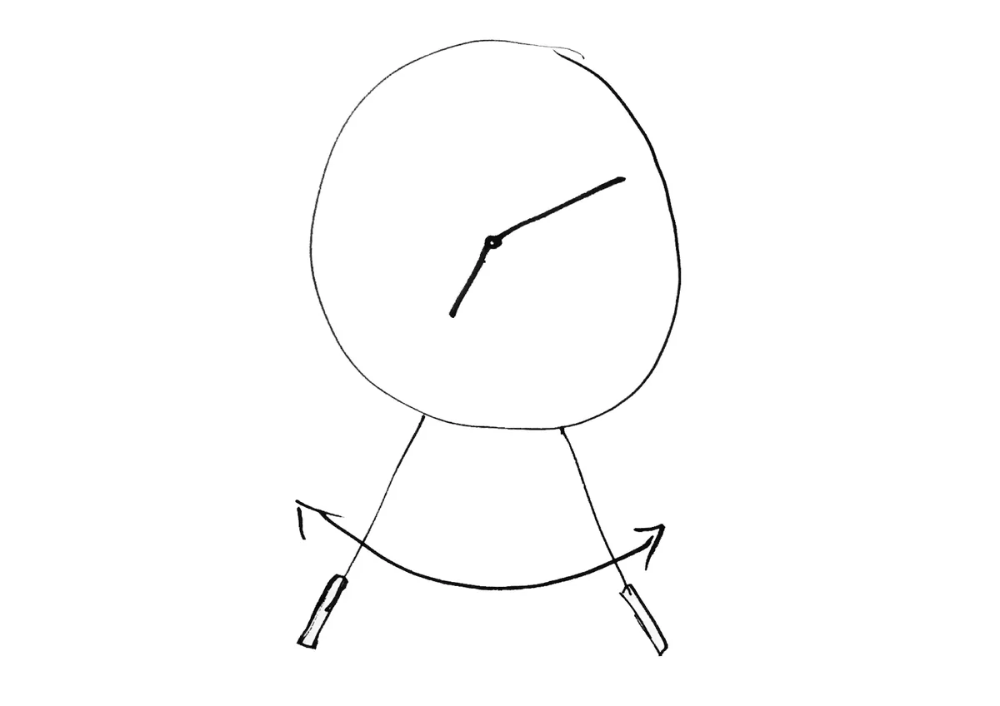
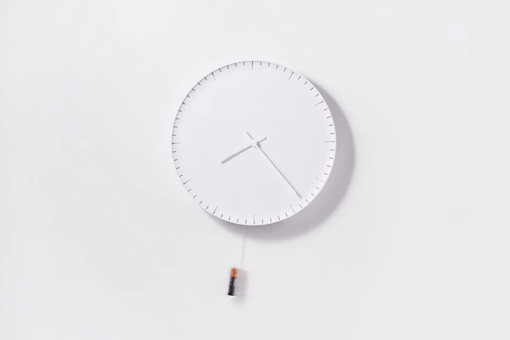
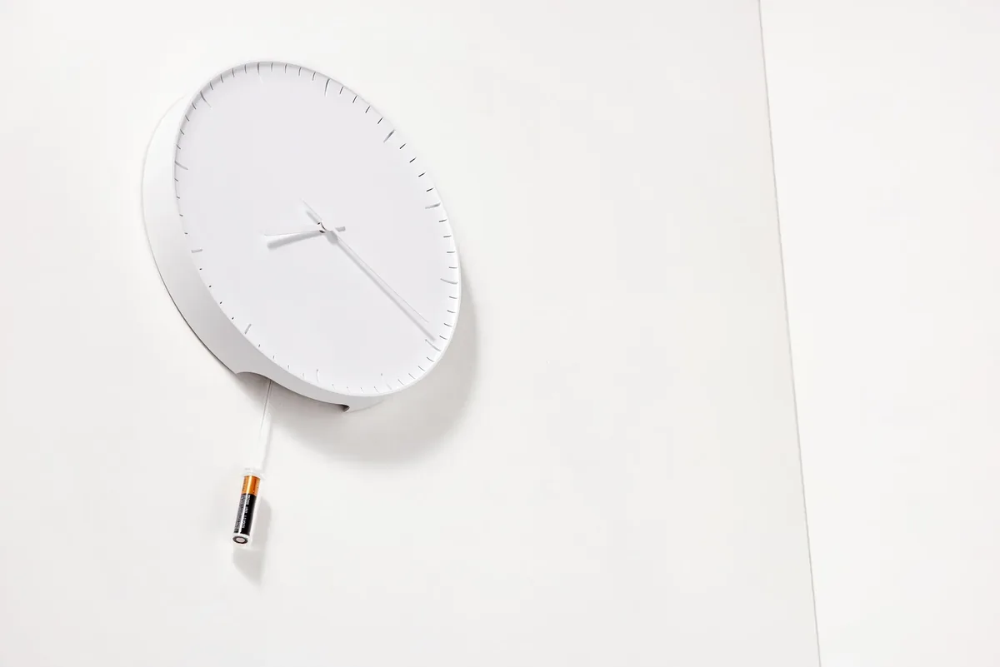
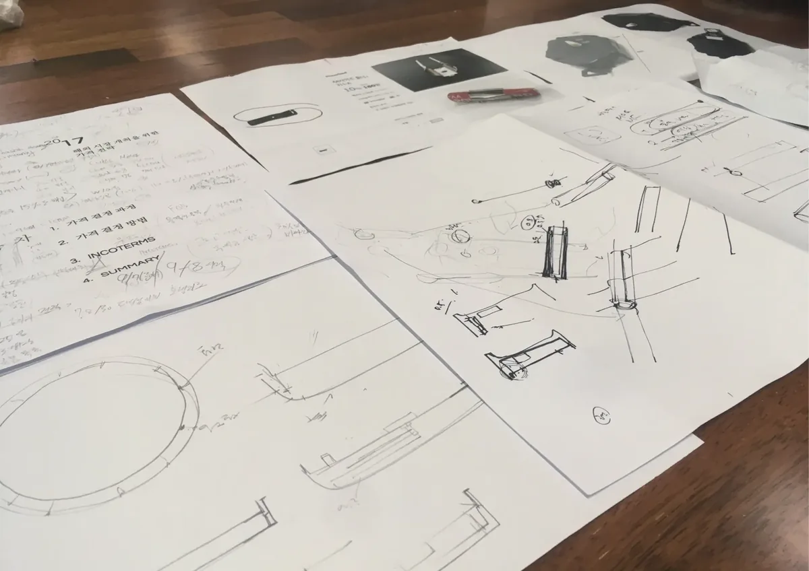

Moment Clock
This clock gently reveals the hidden effort behind its quiet movement.
With each swing, the battery-powered pendulum reminds us of the unseen force that truly keeps time going.
Exhibited at MAISON & OBJET 2017, Paris, France.



